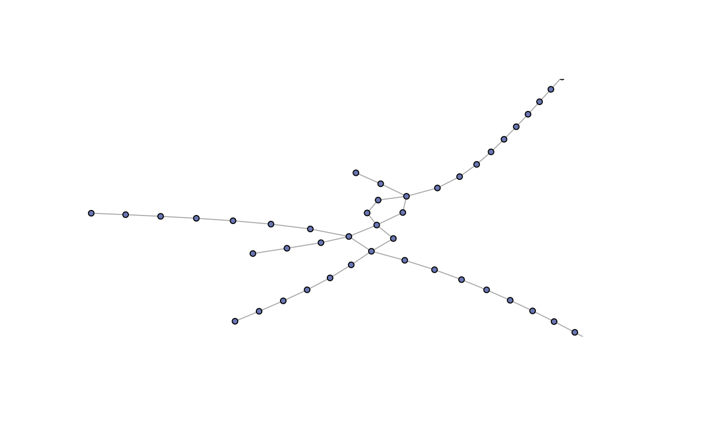
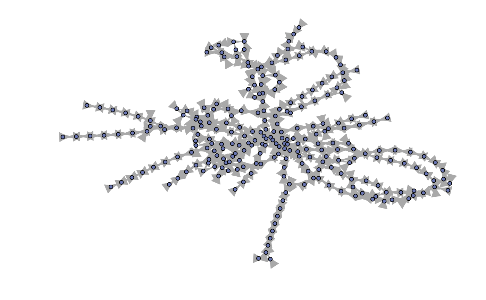

R/data.r
ptn-data.RdPublic transportation network datasets from LinTim software (Integrated Optimization in Public Transportation)
ptnAth The data of the Athens Metro, consisting of 51 nodes and 52 edges.
Vertex attributes: station name, additonal station info.
Edge attributes: track length (in meter), minimal and maximal time required to pass the track (in minutes).
ptnGoe The data of the Goettingen bus network, consisting of 257 nodes and 548 edges.
Vertex attributes: station name.
Edge attributes: track length (in meter), minimal and maximal time required to pass the track (in minutes).
Public transportation network datasets are extracted from LinTim software (Integrated Optimization in Public Transportation; https://www.lintim.net/index.php?go=data&lang=en). Special thanks to Anita Schoebel for making the data available.
The Athens Metro data was collected by Konstantinos Gkoumas.
The Goettingen bus network data was collected by Barbara Michalski.
Juliane Manitz and Jonas Harbering
